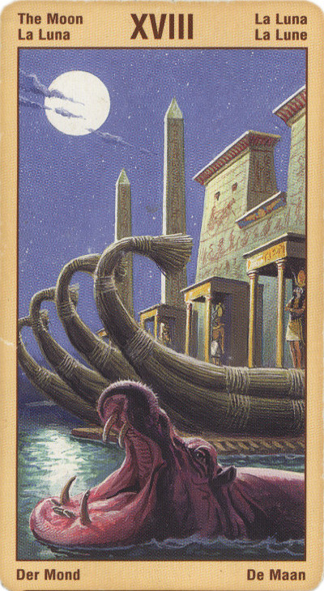

Луна
Эта карта, соответствующая знаку Рыб.
Это царство магии, которая может быть как белой, так и черной. Здесь мы как раз должны проявить свое умение отличать белое от черного.
Смысл карты: тебе являются образы, мысли, идущие из глубин подсознания. Ты спрашиваешь себя: кто я? и ищешь гармонии с высшими силами, управляющими этим миром. Ты уже подошел к познанию Истины; лишь страх мешает тебе переступить ее порог. Но ты прошел уже слишком много, чтобы поворачивать назад; нужно проникнуть дальше, вглубь, дойти до самой сути вещей, а не ограничиваться их поверхностным осмотром.
В раскладе прямая Луна может служить одним из признаков материнства (беременности), вообще означать преобладание иньского, воспринимающего начала, а также мир иллюзий.
При этом “иллюзии” могут иметь и положительное значение, то есть указывать на профессию или советовать заняться каким-нибудь таким делом, как кино, телевидение, фотография, реклама – ведь картинки, которые мы там видим, это тоже иллюзии. Можно стать сказочником или фокусником-иллюзионистом.
И, наконец, в чисто житейском плане она выпадает людям, стоящим на пороге чего-то нового в своей жизни, чего они раньше никогда не испытывали, и именно это вызывает у них страх и беспокойство (новая работа, новый брак, новая страна). Не бойся, говорит эта карта, смело ступай вперед и берись за дело, ибо новое всегда лучше старого.
Это может вывести вас из душевного равновесия, в то же время это может быть полезно для ваших творческих начинаний. В первую очередь, это карта воображения, фантазии, видений, а также созидательной работы, которую все эти силы приводят в действие. Независимо от того, испытываете вы страх или нет, позиция веры в сочетании с умением отличать белое от черного позволят вам использовать качества, которые выражает Луна, наиболее эффективным и приемлемым для вас способом.
Светлая сторона Луны - это романтические грезы, живое воображение и художественная фантазия. Однако у этой карты есть и темная сторона, открывающая путь в самые бездны души; это страх, неуверенность, кошмары, мрачные предзнаменования, вообще предубеждение перед всем неведомым, невидимым. Тьма, застилающая путь, научила нас бояться.
Символически этот аркан представляет собой процесс родов: из теплого, безопасного материнского чрева предстоит через узкие врата вырваться наружу навстречу ослепительному свету холодного мира. "Луна" ждет в этих вратах. Там опасности, страхи, боль, за ними таится неопознанное. По сути дела, путешествие по аду - это путешествие по скрытым лабиринтам своей души. Отсюда- такие атрибуты Луны, как иллюзии, истерия, мания преследования, галлюцинации, наркотики, бегство от действительности.
Но восемнадцатый аркан - это и мост между сознанием и бессознательным. Поэтому каждый человек имеет возможность вернуться из этого путешествия - вернуться с очищенной и обновленной душой, которую больше не будут страшить мысли о будущем.
В прямом положении карта луна означает способность видеть скрытое, глубинное. Карта указывает на повышенную эмоциональность, неустойчивый характер, романтическое отношение к жизни и довольно развитую интуицию. Кроме того, такому человеку легко доверяются другие люди. В целом луна несет на себе отпечаток сумерек: догадки, полупризнания, неясности, скрытые мотивы. Возможно, ложно понятые слова, неверные друзья, двойственное поведение, ложные претензии, неискренность, неизвестные враги... Иногда карта предсказывает и далекие путешествия.
Суть карты - тайна, интуиция, большие способности и обман.
Опасения, обман, тайные враги,разговоры за спиной, иллюзии, раздоры... Иногда означает наличие у вас или того, на кого гадают скрытые психические, магические способности, которые можно при желании развить. В целом не советует действовать активно. Сглаз, порча.
Люди спускаются сюда, чтобы перебороть в себе страх перед собственным бессознательным, перед тем, что скрывается в глубине души и лишь порой вырывается на «поверхность», пугая своей непредсказуемостью.
При раскладе на ситуацию «Луна» намекает на отсутствие в вашей жизни ярко выраженных целей и задач.
В перевернутом положении Аркан Луны указывает, что беременности не будет, что кино-телевидением заниматься не следует – или что “мир иллюзий” приобретает негативный характер, то есть означает зависимость от алкоголя, наркотиков, да хоть компьютерных “виртуальных миров”.
Или – что ожидаемое новое не принесет ничего хорошего.
Ну и, поскольку Луна обходит небосвод за месяц, эта карта иногда может обозначать срок в один месяц.
Для бизнесменов – ставки на шоу-бизнес, кино, рекламу, для особо крутых – на компьютерные игры, игровые автоматы, казино. Перевернутая Луна – лучше обождать некоторое время, пока наиболее ретивые конкуренты не набьют себе шишек, и тогда приступать к делу.
Выпадая в раскладе, Луна в перевернутом положении может указывать на период замешательства и смущения, или даже на серьезные проблемы, обусловленные нарушениями в вашей психике. Она также может указывать на то, что вы либо кто-то другой говорит неправду, или же что вы вовлечены в отношения, которым досаждают фантазии, основанные на иллюзиях и прожектерстве. Если вам необходимо принять какие-то важные решения или связать себя какими-то обязательствами, будьте предельно осторожны.